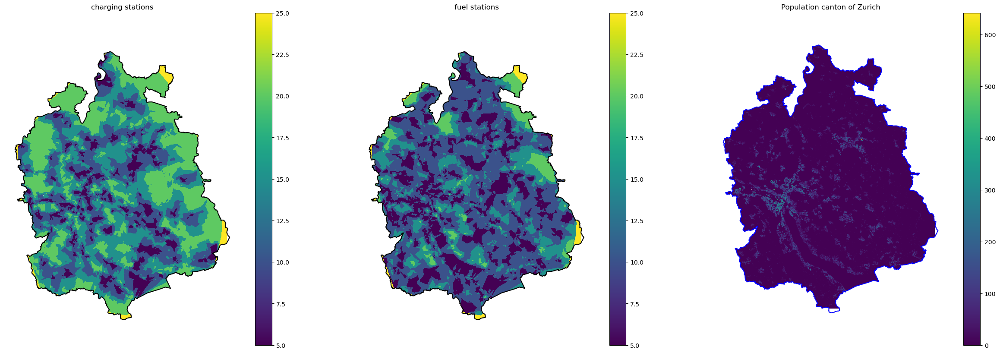

Plug-in electric vehicles (PEVs) have the potential to contribute to the achievement of climate policy goals. PEVs increased their market share on a yearly basis and will continue to do so. Therefore, development of adequate infrastructure is crucial. This work evaluates the current accessibility of charging stations based on travel time from the place of residence compared to fuel stations in the canton of Zurich. Analysis was carried out with Free and Open Source Software for Geoinformatics (FOSS4G). The presented method is built up in such a way that allows easy reproducibility for other regions if spatial population data is available or even analysis of other locations of interest. In the canton of Zurich, charging stations are less accessible than fuel stations. However, as PEV use requires different operations and shifts from public to private solutions, current accessibility is good.
1 Introduction
To achieve climate policy goals, it is widely acknowledged that anthropogenic greenhouse gases (GHG) must be reduced. The current efforts of different branches of the economy are already measurable today. Every sector in Europe reduced their emissions compared to the level of 1990, except for the transport sector (Jochem et al., 2015). Plug-in electric vehicles (PEVs), which includes battery electric vehicles (BEVs) and plug in hybrid vehicles (PHEVs), are less polluting and more efficient compared to most internal combustion engine vehicles (ICEVs) (Jochem et al., 2015). Many manufacturers promise to fully shift production to EVs by 2035 at the latest (ADAC, n.d.). In addition, the market share of EVs has been increasing in recent years. In Switzerland, 22.4 % of new registrations in 2021 were PEVs (Vereinigung Schweizer Automobil-Importeure, n.d.). This requires an infrastructure that can handle these additional volumes (Khan et al., 2018). Therefore, this work investigates the current state of availability of charging station infrastructure compared to the network of fuel stations that has been built up over decades, by using Free and Open Source Software for Geoinformatics (FOSS4G).
2 Method
Analysis was carried out using python (version 3.10.8) in jupyter lab (version 3.5.1). All used data was converted to the Swiss coordinate reference system (CRS) CH1903+ / LV95. Following packages were used:
warnings
geopandas (version 0.12.2)
pandas (version 1.5.2)
matplotllib
networkx (version 2.8.4)
osmnx (version 1.3.0)
numpy (version 1.24.1)
scipy (version 1.10.0)
shapely (version 2.0.0)
gdal (version 3.6.2)
ogr
osr
rasterio (version 1.3.4)
rioxarray (version 0.13.3)
math
os
Code
import warningsimport geopandas as gpdimport pandas as pdpd.options.mode.chained_assignment =None#supress pandas warningimport matplotlib.pyplot as pltimport networkx as nximport osmnx as oximport numpy as npimport scipyimport shapelyfrom osgeo import gdal, ogr, osrimport rasterioimport rioxarray as rxrimport mathimport oswarnings.filterwarnings('ignore') #supress warnings
For calculation of accessibility, three functions were created to I) generate isochrones, II) export the isochrones as GeoTIFF and III) combine the GeoTIFF with spatial population data.
I) Isochrones
Location of an amenity is retrieved and converted to point data. Each entry is then iterated for calculation of isochrones. For this, the closest network node is determined as the starting point. Maximum time extent for isochrones can be set as required. For nodes located in the isochrones of multiple charging or fuel stations, the shortest travel time is used followingly. Those nodes returning no results are removed for subsequent linear interpolation of travel times. For interpolation, initially an empty grid with the configured grid size is created. Then the scipy package is used for linear interpolation filling the grid with information. Finally, the resulting xyz arrays containing the shortest travel times are categorized into the desired intervals. The function also returns a data frame containing the shortest travel time to the chosen amenity.
Code
# create function to calculate travel times in df and interpolate themdef calculate_shortest_travel_times(amenity, network_graph, country ="Switzerland", state =None, city =None, max_trip_time =20, max_expected_trip_time =40, interval =5, raster_size =25):# create function for demanded raster sizedef round_to_raster_size(number, multiple):return multiple *round(number / multiple)# download the amenities (e.g. charging stations and fuel stations) place = {"city": city, "state": state, "country": country} geometries = ox.geometries_from_place(place, {"amenity": [amenity]}).dropna(axis=1, how="any").to_crs("EPSG:2056") amenity = geometries[geometries["amenity"] == amenity]# convert polygon entries to points (by taking the centroid) amenity['geometry'] = amenity['geometry'].centroid#transform graph to nodes and edges gdf gdf_nodes = ox.graph_to_gdfs(G, edges=False)# add column x and y for input loop amenity["x"] = amenity.centroid.map(lambda p: p.x) amenity["y"] = amenity.centroid.map(lambda p: p.y)# calculate travel time from each charging station / fuel station to every node trip_times =list(range(1,max_expected_trip_time+1)) list_all_node_times = []for i inrange (len(amenity)): # outer loop for every amenity center_node = ox.nearest_nodes(G,amenity.iloc[i]["x"],amenity.iloc[i]["y"]) node_times = {}for trip_time insorted(trip_times, reverse=True): # inner loop for travel time isochrones subgraph = nx.ego_graph(G, center_node, radius=trip_time, distance="time")for node in subgraph.nodes(): node_times[node] = trip_time df_node_times = pd.DataFrame([node_times]).transpose().rename_axis('osmid') df_node_times = gdf_nodes.join(df_node_times) df_node_times = df_node_times[df_node_times[0].notna()] df_node_times = df_node_times.rename(columns = {0: 'trip_time'})[['x','y','trip_time']] list_all_node_times.append(df_node_times)# combining the list of dfs into one df df_all_node_times = pd.concat(list_all_node_times, join='outer', axis=1).drop(columns=['x','y'])#loop to extract shortes travel time list_shortest_travel_time = []for i inrange (len(df_all_node_times)): shortest_travel_time = df_all_node_times.iloc[i].min() list_shortest_travel_time.append(shortest_travel_time)# prepare and clean data for interpolation input into one dataframe df_all_node_times['shortest_travel_time'] = list_shortest_travel_time df_shortest_travel_time = df_all_node_times.drop(columns=['trip_time']) points_and_shortest_time = [df_shortest_travel_time, gdf_nodes.iloc[:, 0:2]] df_shortest_travel_time = pd.concat(points_and_shortest_time, join='outer', axis=1).dropna()# interpolate the points into raster x = df_shortest_travel_time['x'] y = df_shortest_travel_time['y'] z = df_shortest_travel_time['shortest_travel_time'] x_min, x_max, y_min, y_max = [df_shortest_travel_time.x.min()-1000, df_shortest_travel_time.x.max()+1000, df_shortest_travel_time.y.min()-1000, df_shortest_travel_time.y.max()+1000] X = np.linspace(round_to_raster_size(x_min, raster_size), round_to_raster_size(x_max, raster_size),round((round_to_raster_size(x_max, raster_size)- round_to_raster_size(x_min, raster_size))/raster_size)) Y = np.linspace(round_to_raster_size(y_min, raster_size), round_to_raster_size(y_max, raster_size),round((round_to_raster_size(y_max, raster_size)- round_to_raster_size(y_min, raster_size))/raster_size)) X, Y = np.meshgrid(X, Y) # 2D grid for interpolation interp = scipy.interpolate.LinearNDInterpolator(list(zip(x, y)), z) Z = interp(X, Y)# categorize interpolated according to interval Z = np.ceil(Z / interval)*interval Z[Z > max_trip_time] = max_trip_timereturn X,Y,Z, df_shortest_travel_time
II) export GeoTIFF
These arrays are then converted to GeoTIFF format and exported. For this, the extent given by the x and y arrays are determined. Then the driver that defines the output format is set up. As in the precious step, a grid, which matches the arrays, is generated, and filled with the travel times. After defining the CRS, the GeoTIFF can finally be exported using the driver. NA values are automatically assigned the null value.
Code
# define function to create and export travel times as GeoTIFF# from (adapted): https://geonetcast.wordpress.com/2022/05/12/creating-a-geotiff-from-a-numpy-array/def export_tif_xyz(X,Y,Z, file_name): data = Zdef getGeoTransform(extent, nlines, ncols): resx = (extent[2] - extent[0]) / ncols resy = (extent[3] - extent[1]) / nlinesreturn [extent[0], resx, 0, extent[3] , 0, -resy]# Define the data extent (min. lon, min. lat, max. lon, max. lat) extent = [X.min(), Y.max(), X.max(), Y.min()] # South America### Export the array to GeoTIFF# Get GDAL driver GeoTiff driver = gdal.GetDriverByName('GTiff')# Get dimensions nlines = data.shape[0] ncols = data.shape[1] nbands =len(data.shape) data_type = gdal.GDT_Int16# Create a temp grid grid_data = driver.Create('grid_data', ncols, nlines, 1, data_type)# Write data for each bands grid_data.GetRasterBand(1).WriteArray(data)# Spatial Reference System srs = osr.SpatialReference()# Setup projection and geo-transform grid_data.SetProjection(srs.ExportToWkt()) grid_data.SetGeoTransform(getGeoTransform(extent, nlines, ncols))# Save the filefile= file_name driver.CreateCopy(file, grid_data, 0) # Close the file driver =None grid_data =None# Delete the temp grid os.remove('grid_data')
III) calculate raster statistics
This function requires two GeoTIFFs as an input. One is the previously generated GeoTIFF containing information about shortest travel times, the other spatial population data. The travel time is multiplied by 1000 and added to the number of residents living in the given raster cell. This results in a 5-digit number (format TTPPP), whereas TT contains the travel time and PPP information on population density. After converting the newly generated and combined GeoTIFFs to an arrays, they are looped to extract any raster cell value into one list. The list is then converted to a data frame and the TTPPP format is split to TT and PPP. Any row where the population is null is removed. Then the data frame is grouped based on the travel time interval (under 5, 5 to 10, 10 to 15, 15 to 20 or 20 plus minutes) and the percentage of population from each summed interval is calculated and returned.
Code
# create function to calculate percentage of population within travel time intervalsdef get_statistics(amenity, population):# raster calculator in fromat TTPPP (T = travel_time, P = Population) final = amenity*1000+ population final_array = final.to_numpy()[0]#extract all values final_list = []for i inlist(range(len(final_array))): subarray = final_array[i]for r inlist(range(len(subarray))):if math.isnan(subarray[r]) ==False: final_list.append(round(subarray[r].item()))# split the TTPPP code to extract final_df = pd.DataFrame(final_list, columns=['TTPPP']) final_df["asstring"] = final_df['TTPPP'].astype(str) final_df['population'] = final_df["asstring"].str[-3:].astype(int) final_df['travel_time'] = final_df["asstring"].str[:-3].astype(int) final_df = final_df.drop(columns=['TTPPP','asstring']) final_df = final_df[final_df.population >0] #delete al values wehre population is 0 population_total =sum(final_df['population'])# categorize population by travel time df_travel_time = final_df.pivot(columns='travel_time') df_travel_time = df_travel_time['population']# calculate_sum population_5 = df_travel_time[5].sum() population_10 = df_travel_time[10].sum() population_15 = df_travel_time[15].sum() population_20 = df_travel_time[20].sum() population_20_plus = df_travel_time[25].sum()# calculate percent of population with travel times per_5 =100/ population_total * population_5 per_10 =100/ population_total * population_10 per_15 =100/ population_total * population_15 per_20 =100/ population_total * population_20 per_20_plus =100/ population_total * population_20_plus#print percentage within 5, 10, 15, 20 and more than 20 minutes travel timereturn [per_5, per_10, per_15, per_20, per_20_plus]
calculations
For the analysis, initially the location and the network type were defined. Then, the road network, as well as boundary polygon of the canton of Zurich were obtained and complemented with additional information on travel time for each edge. Subsequently, the network graphs were converted to the Swiss CRS. The previously generated functions were then used to calculate the accessibility of charging and fuel stations. When importing the GeoTIFFs, null values are changed to 25 as this represents the category of more than 20 minutes travel time and it mostly affects regions outside the Zurich cantonal borders, which are removed in the subsequent step when the GeoTIFFs are clipped to the boundary.
Code
%%capture --no-displaycity =Nonestate ="Zuerich"country ="Switzerland"network_type ="drive"# download the street network for graphplace = {"city": city, "state": state, "country": country}G = ox.graph_from_place(place, network_type=network_type)# impute missing edge speeds and add travel timesG = ox.add_edge_speeds(G)G = ox.add_edge_travel_times(G)# transform to LV95G = ox.project_graph(G, to_crs="EPSG:2056")# download boundarygdf_boundary = ox.geocode_to_gdf(place).dropna(axis=1, how="any").to_crs("EPSG:2056")boundary_line = gdf_boundary.iloc[0]["geometry"]boundary_1, boundary_2 = boundary_line.exterior.xygdf_nodes = ox.graph_to_gdfs(G, edges=False)# calculate travel times for charging stationsX_charging, Y_charging, Z_charging, df_charging = calculate_shortest_travel_times("charging_station", network_graph = G, state = state, city = city, max_trip_time=20, interval =5, raster_size=100)# calculate travel times for fuel stationsX_fuel, Y_fuel, Z_fuel, df_fuel = calculate_shortest_travel_times("fuel", network_graph = G, state = state, city = city, max_trip_time=20,interval =5, raster_size=100)# export tif travel times to charging stationsexport_tif_xyz(X = X_charging, Y = Y_charging, Z = Z_charging, file_name='data/charging_raster.tif')# export tif travel times to charging stationsexport_tif_xyz(X = X_fuel, Y = Y_fuel, Z = Z_fuel, file_name='data/fuel_raster.tif')#define crop extentcrop_extent = gdf_boundary['geometry']# import driving timeCharging = rxr.open_rasterio('data/charging_raster.tif').rio.write_crs("EPSG:2056")Charging = Charging.where(Charging >0).fillna(25)Charging_clipped = Charging.fillna(25).rio.clip(crop_extent.geometry.apply(shapely.geometry.mapping))# import fuel timeFuel = rxr.open_rasterio('data/fuel_raster.tif').rio.write_crs("EPSG:2056")Fuel = Fuel.where(Fuel >0).fillna(25)Fuel_clipped = Fuel.fillna(25).rio.clip(crop_extent.geometry.apply(shapely.geometry.mapping))# import populationZH_population = rxr.open_rasterio('data/ZH_Bevoelkerungsdichte.tif', masked =True)ZH_population = ZH_population.where(ZH_population !=-999).fillna(0)# fill nan values with 0 and clip to boundaryZH_population_clipped = ZH_population.rio.clip(crop_extent.geometry.apply(shapely.geometry.mapping))
data
The OSMnx package, with which the road network, as well as the spatial charging / fuel station data were obtained accesses OpenStreetMap Data (Boeing, 2017). Spatial population data was downloaded from GIS-Browser, n.d. as shapefile and converted to a GeoTIFF raster with QGIS (version 3.22.14 LTR) and provided as supplementary information. Finally, the three functions were applied to generate the results.
3 Results
Accessibility of charging stations is lower compared to fuel stations. More than twice as many Zurich residents are within a five-minute drive of a gas station (36.1%) when compared to charging stations (15.9%). Most of the people have a travel time from 5 to 10 minutes to reach a charging (37.4%) or a fuel station (45.9%). For both amenities, no resident has a travel time exceeding 20 minutes. A summary of all percentages is shown in Table 1. Visualizations of shortest travel times to either a charging or a fuel station are shown in Figure 1.
Code
# plot travel timestravel_time_map, axs = plt.subplots(1,3, figsize=(30,10))Charging_clipped.plot(ax=axs[0])axs[0].plot(boundary_1, boundary_2, c ="black")axs[0].set(title="charging stations")axs[0].set_axis_off()axs[0].axis("equal")Fuel_clipped.plot(ax=axs[1])axs[1].plot(boundary_1, boundary_2, c ="black")axs[1].set(title="fuel stations")axs[1].set_axis_off()axs[1].axis("equal")ZH_population_clipped.plot(ax=axs[2])axs[2].set(title="Population canton of Zurich")axs[2].plot(boundary_1, boundary_2, c ="blue")axs[2].set_axis_off()axs[2].axis("equal")plt.show()

Figure 1: left and center figures show travel times to charging / fuel stations in minutes and right figure shows population per hectare
Code
# calculate percantage of population which is in 5, 10, 15, 20 or 20plus minutes at a charging stationcharging_statistics = get_statistics(amenity=Charging, population=ZH_population_clipped)# calculate percantage of population which is in 5, 10, 15, 20 or 20plus minutes at a fuel stationfuel_statistics = get_statistics(amenity=Fuel, population=ZH_population_clipped)accessibility = ["< 5 min", "5 to 10 min", "10 to 15 min", "15 to 20 min", "> 20 min"]results = pd.DataFrame( {'accessibility': accessibility,'charging station': charging_statistics,'fuel station': fuel_statistics })# define appearance of data frameheaders = {"selector": "th:not(.index_name)","props": "background-color: #0B4360; color: white; text-align: center"}cell_hover = {"selector": "td:hover","props": [("background-color", "#75B6D9")]}properties = {"border": "1px solid black", "width": "240px", "height": "25px", "text-align": "center"}results.style.hide(axis="index").set_properties(**properties).set_table_styles([headers, cell_hover]).format({"charging station": "{:.1f} %","fuel station": "{:.1f} %"})
Table 1: accessibility of charging / fuel stations for population in the canton of Zurich
accessibility
charging station
fuel station
< 5 min
15.9 %
36.1 %
5 to 10 min
37.4 %
45.9 %
10 to 15 min
30.4 %
15.5 %
15 to 20 min
16.3 %
2.6 %
> 20 min
0.0 %
0.0 %
4 Discussion
Code
For calculation of travel times, the spatially nearest node from the network to the point data of the charging/fuel station is identified. This nearest node is then taken as the starting point for travel time calculations. However, this leads to certain locations being assigned to the wrong network sections. For example, a charging station located at a highway service area is falsely connected to a node on a country road next to the highway, which means that population living close to this location are incorrectly assigned a short travel time.
Travel times for population at the border to other cantons are not accurate, as the nearest charging or fuel station could be across the border outside the canton of Zurich. Even though travel times for border regions are in some areas to high, this can be neglected, as it only affects a fraction compared to the whole area and both, fuel and charging stations, are subject to this bias.
Maximum expected travel time for isochrones was set to 40 minutes, as this ensures in a developed area as the canton of Zurich, that any node is covered. Falsely categorized nodes which were not accessible (e.g. dead ends with falsely classified one-way roads) could therefore be ignored for subsequent calculations. However, if the code is to be used for analyses in more rural areas, the maximum expected travel time for isochrones must be increased.
Data
Due to data protection, grid cells in which three or fewer residents live are not listed at the correct location, but at the location of the respective municipal office (Statistisches Amt Kanton Zürich, 2020). As this concerns only areas with little population, results are only minimally affected and again, both, charging and fuel stations, are subject to this problem.
FOSS4G compared to proprietary GIS solutions
Proprietary GIS software such as ArcGIS or Geomedia provide a user-friendly graphical user interface (GUI). This makes it easily accessible for inexperienced users. However, these programs are expensive. Furthermore, some tools may not be available and, in most cases, cannot be added since the developers have absolute authority over the program (Brovelli et al., 2012). FOSS4G on the other hand overcome these issues, as source code is usually published under free and open-source license (Brovelli et al., 2012). Furthermore, reproducibility of results and quality assessment of methods are greatly assisted by full access to the underlying algorithms (Brovelli et al., 2012). One of the biggest advantages of FOSS4G is the ability to handle repetitive tasks very efficient. However, the use of FOSS4G requires a basic knowledge of programming, which makes it difficult for inexperienced users. This means, that for simple spatial analysis proprietary GIS solutions are a valid choice, however for advanced, repetitive tasks FOSS4G is the advantageous solution. To solely analyze accessibility of charging and fuel stations in the canton of Zurich, an approach with a proprietary GIS solution would have been more time efficient. However, the chosen method presents a solution which could be applied for any location, given spatial population data is available. Furthermore, the method can not only be applied on charging or fuel stations, but any data provided by open street map. For example, accessibility of hospitals, supermarkets, or sport facilities. In addition, not only the accessibility by car, but also by bicycle or on foot can be calculated depending on the specified network. This emphasizes the advantages of FOSS4G when working on iterative tasks.
Conclusions
With less than 10% of all charging processes carried out at public charging stations, this option is only third choice behind private charging (50-80%) and charging at work (15-25%) (Hardman et al., 2018). The current expansion can therefore be considered sufficient, taking into account these different user habits. Hence, to further promote e-mobility, the expansion of charging options in private spaces is much more essential. Nonetheless, a well-developed charging infrastructure can encourage more consumers to buy PEVs (Hardman et al., 2018), which suggests that the expansion of the charging station infrastructure should be continued in the canton of Zurich.
Brovelli, M. A., Mitasova, H., Neteler, M., & Raghavan, V. (2012). Free and open source desktop and WebGIS solutions. Applied Geomatics, 4(2), 65–66. https://doi.org/10.1007/s12518-012-0082-4
Hardman, S., Jenn, A., Tal, G., Axsen, J., Beard, G., Daina, N., Figenbaum, E., Jakobsson, N., Jochem, P., Kinnear, N., Plötz, P., Pontes, J., Refa, N., Sprei, F., Turrentine, T., & Witkamp, B. (2018). A review of consumer preferences of and interactions with electric vehicle charging infrastructure. Transportation Research Part D: Transport and Environment, 62, 508–523. https://doi.org/10.1016/j.trd.2018.04.002
Jochem, P., Babrowski, S., & Fichtner, W. (2015). Assessing CO2 emissions of electric vehicles in Germany in 2030. Transportation Research Part A: Policy and Practice, 78, 68–83. https://doi.org/10.1016/j.tra.2015.05.007
Khan, W., Ahmad, A., Ahmad, F., & Saad Alam, M. (2018). A ComprehensiveReview of FastChargingInfrastructure for ElectricVehicles. Smart Science, 1–15. https://doi.org/10.1080/23080477.2018.1437323